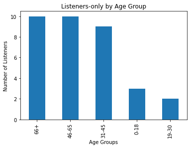
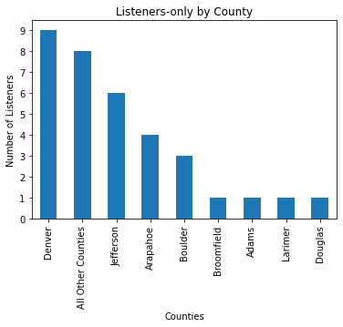
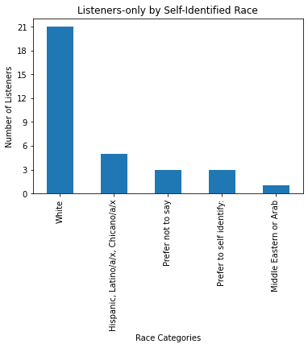

KGNU Listeners only
Contents
KGNU Listeners only¶
(Those who enjoy listening to KGNU but haven’t financially contributed or become a KGNU Volunteer yet)
By Age Groups¶

Respondents: 436
Listeners within those Respondents: 34
By Counties¶

Respondents: 436
Listeners within those Respondents: 34
By Self-Identified Race Categories¶

Respondents: 343
Listeners within those Respondents: 33